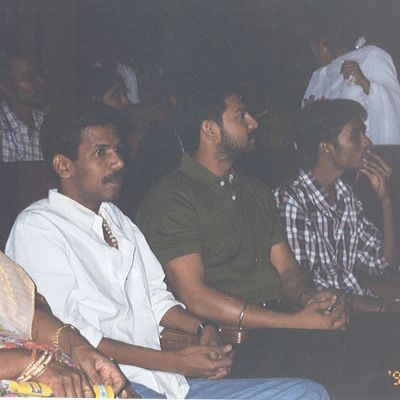
2003
Donated 6 motorized vehicles to the physically challenged staffs and students of Anna university
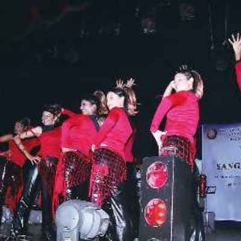
2006
Donated an ambulance for the HIV infected children with the partnership of Community Health Education Service(CHES)
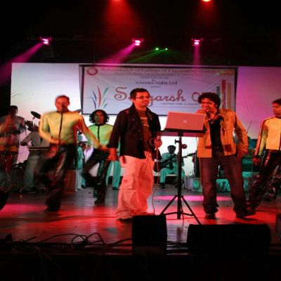
2007
Building an audio visual library in Rasa and constructed a living room at Samarpana for the mentally challenged children.
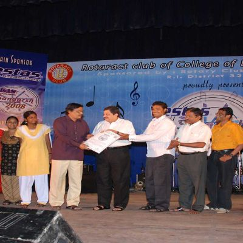
2008
Reconstruction of the premises and the construction of a computer lab through the CSI Home for polio rehabilitation
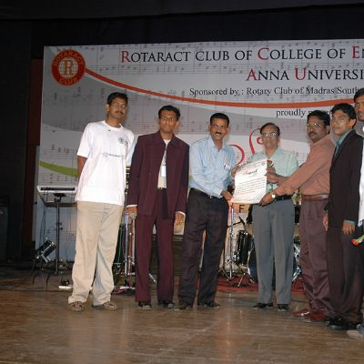
2009
Renovation of the buildings of Karunai Illam, East Tambaram
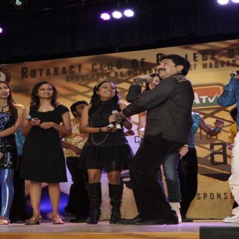
2010
Donated for the construction of a new home for the HIV infected children of SHELTER, Kolathur
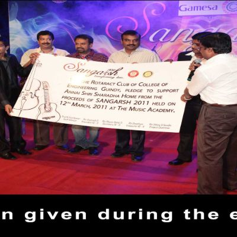
2011
Construction of 3 living rooms, a new classroom and provision of sanitary facilities for Annai Sri Sharadha Illam, Cholavaram
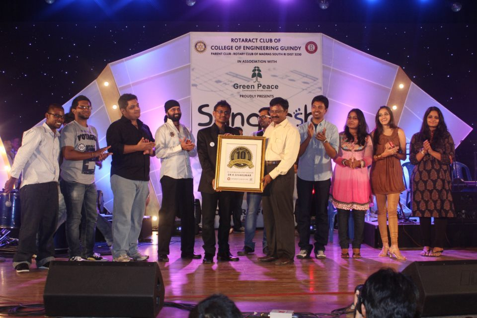
2012
Supporting Dr. Mani Heart Foundation and Govt. High School, Thirumulaivayol by raising funds for 6 heart surgeries
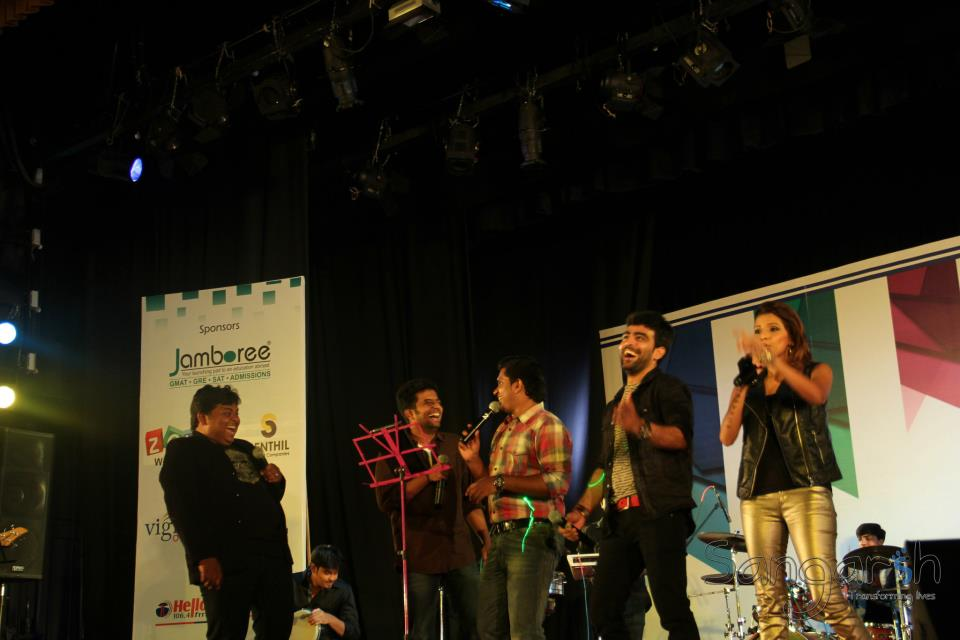
2013
Construction of rooms and provision of sanitary facilities to Thalassemia Welfare Association, Coimbatore and Saran Old Home, Namakkal
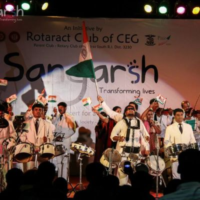
2014
Provision of medication to the Hemophilic children
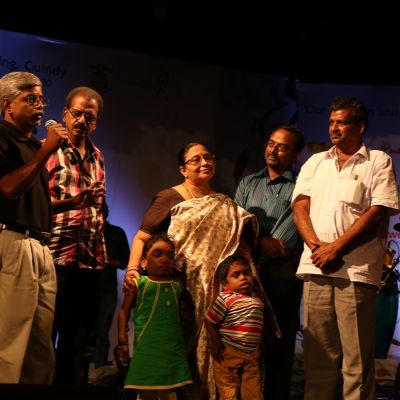
2015
Raising funds for the children affected by Lysosomal Storage Disorder and supporting the Lysosomal Storage Disorder Society, Chennai
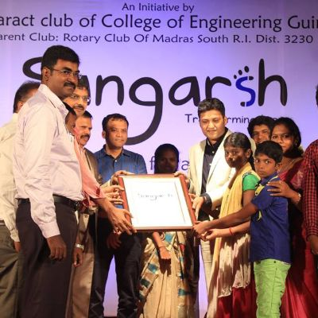
2016
Donated for the children affected by Pediatric Acute Leukemia (PAL) by supporting The Ray of Light Foundation, Chennai
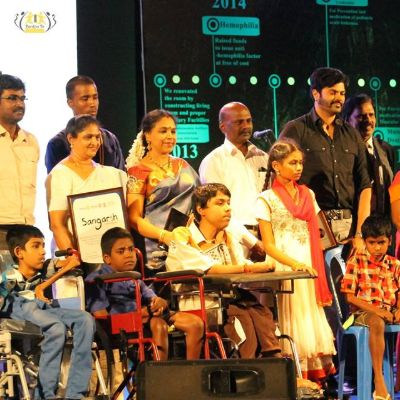
2017
Donated for the children affected by Muscular Distrophy by supporting Muscular Distrophy Foundation India, Madurai
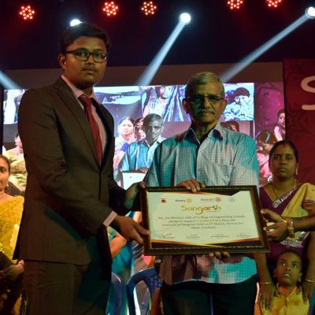
2018
Donated for the children affected by Cerebral Palsy by supporting JK Mass Foundation, Madurai